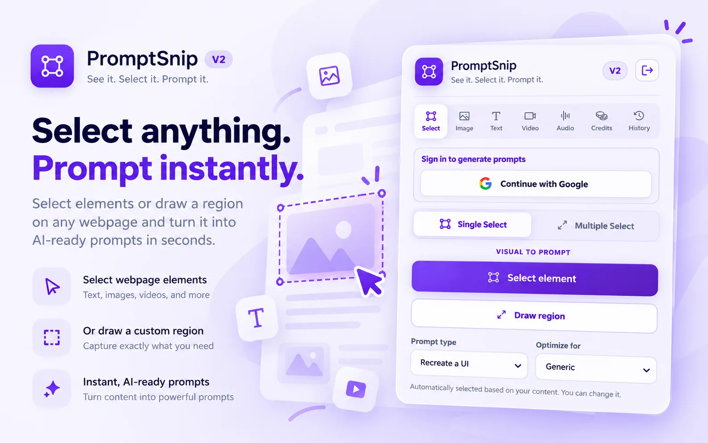
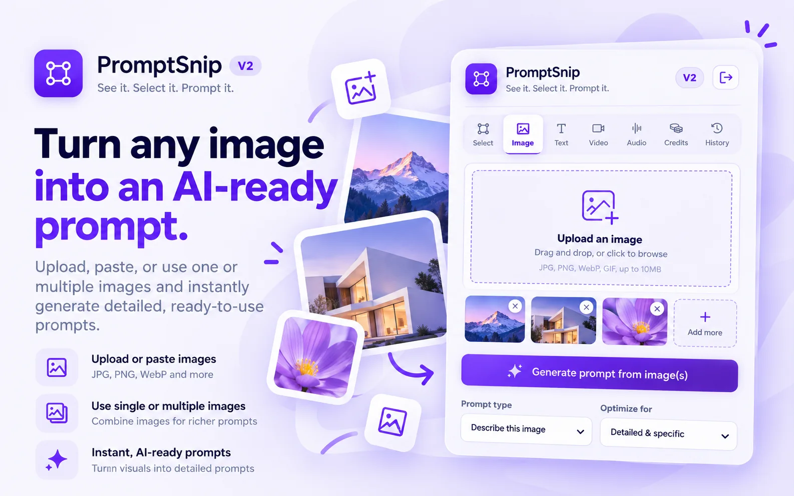
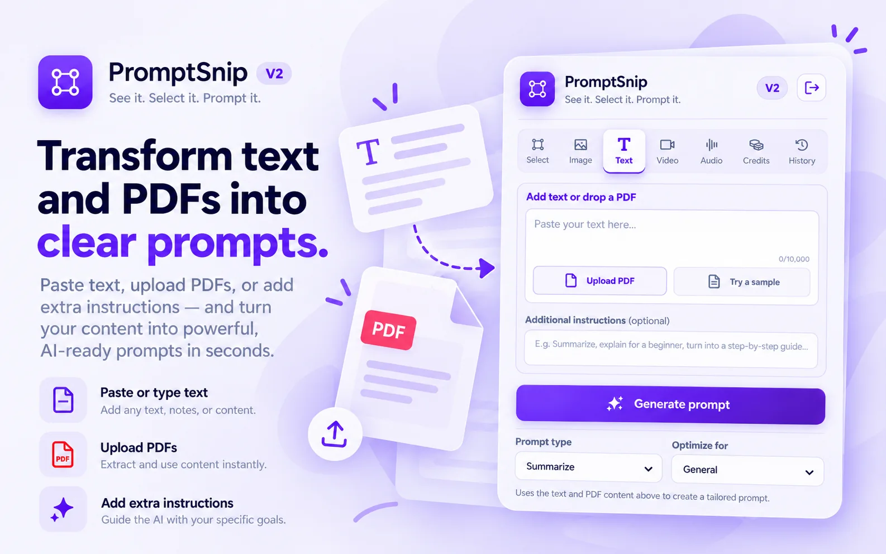
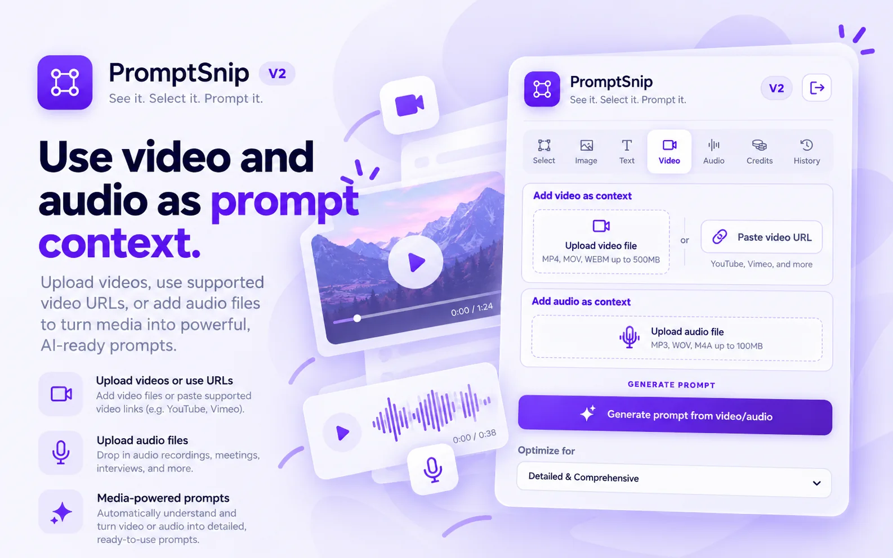
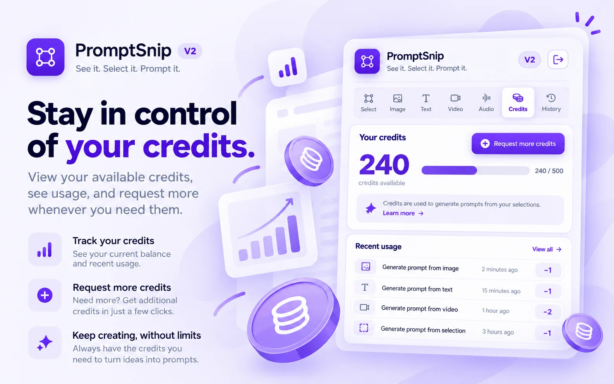
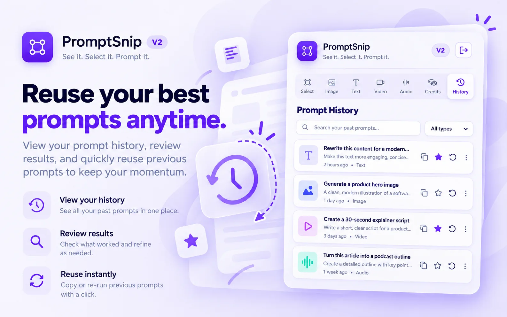

01 / 07
Select
Capture one element or multiple webpage regions, and add instructions before generating.

PROMPTSNIP 2.0 FEATURES
Everything is organized around the content you already have, so you can move from source material to a useful prompt without learning a complicated interface.
EXPLORE THE INTERFACE
Creative illustrations of PromptSnip 2.0 workflows, inspired by the extension interface.
Capture one element or multiple webpage regions, and add instructions before generating.

Upload one image or several references to build an accurate visual prompt.

Paste text or add a PDF, choose your goal, and write extra instructions.

Upload a video or provide a supported public URL for video-based prompting.

Use an audio recording to extract context for a structured AI prompt.
Check your remaining daily and monthly credits, or request more.

Find, revisit, copy, and reuse prompts you generated earlier.

SMARTER CONTROLS
PromptSnip reduces repetitive decisions while keeping important choices visible.
Your input can automatically select a relevant prompt category. Change it anytime before generation.
Try another result without rebuilding your source input from the beginning.
Move the final prompt into the AI tool or workflow where you actually need it.
Add intent, tone, constraints or implementation requirements before PromptSnip generates.
READY TO TRY IT?